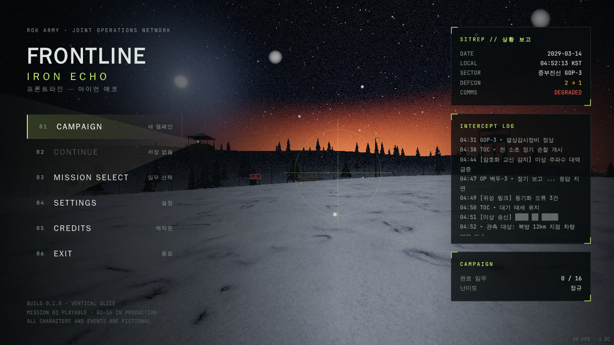
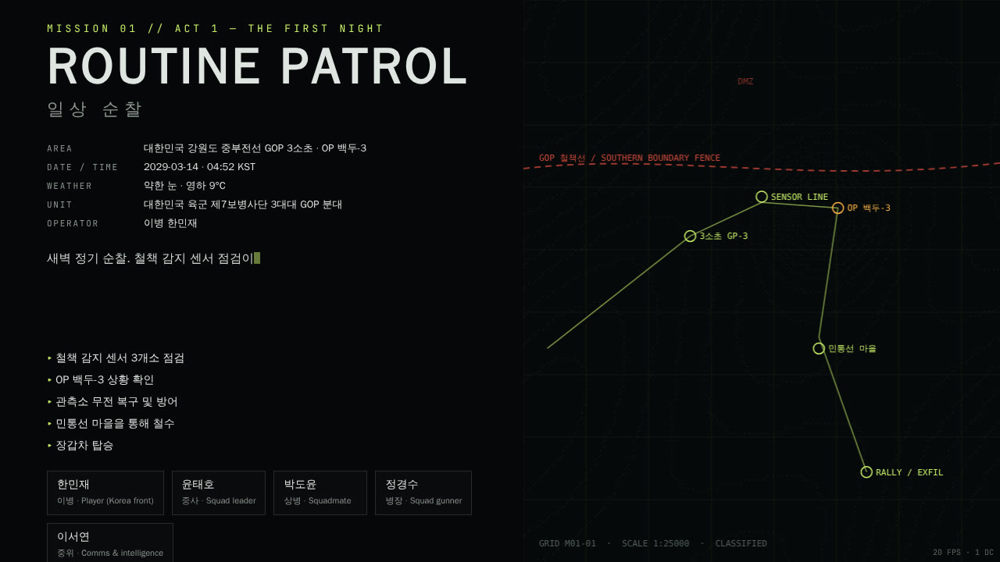
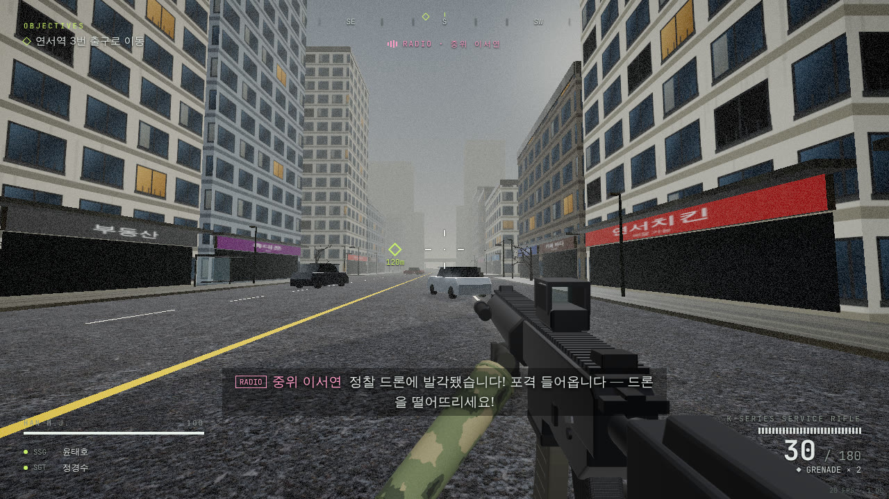
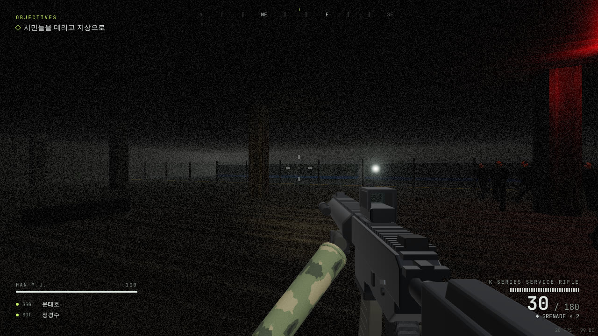
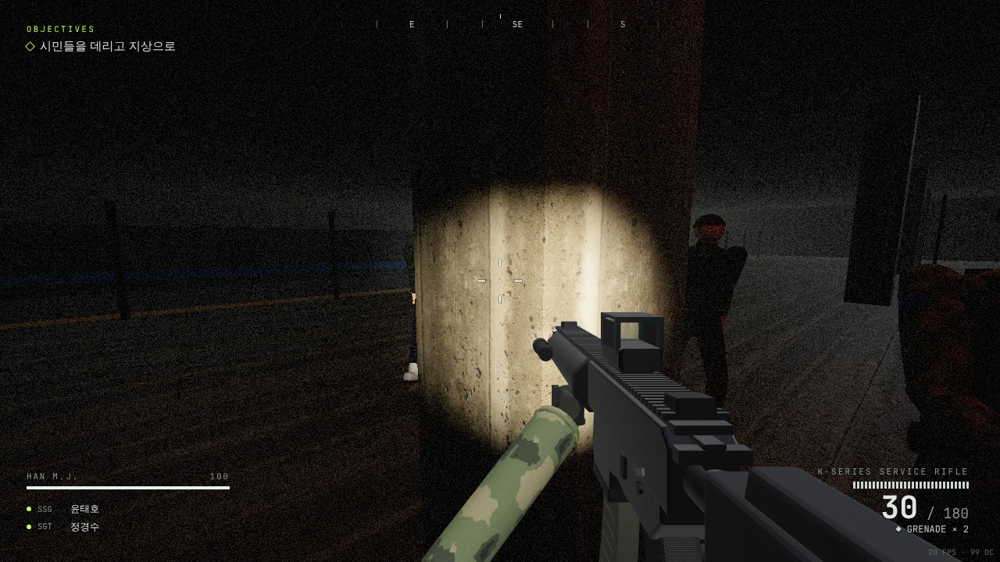
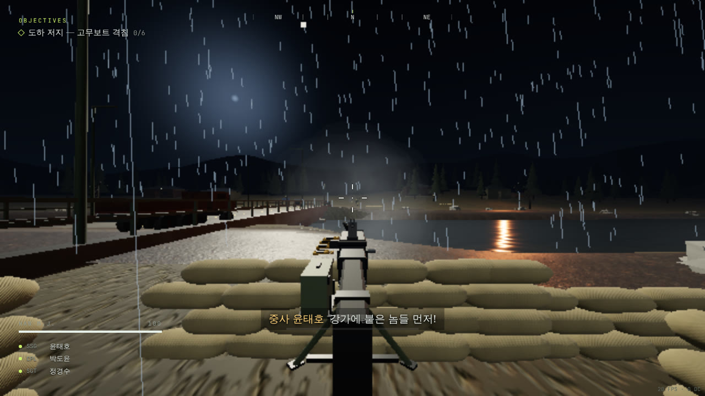
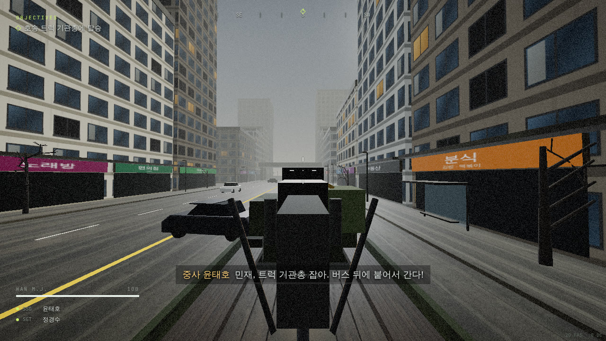

SINGLE-PLAYER MODERN MILITARY FPS · 1인칭 현대전 FPS
FRONTLINE — IRON ECHO
2029년, 한반도 전면전. 신병 한민재의 한국 전선과, 지워진 전직 요원 다니엘 보스의 해외 추적이 하나의 거짓말로 이어지는 16개 미션 캠페인. 브라우저에서 바로 실행되는 3D 게임입니다(three.js · WebGL 2).
이 페이지는 게임 소개입니다. 게임 자체는 JavaScript와 WebGL 2가 켜진 데스크톱 브라우저(Chrome · Edge · Firefox)에서 이 주소를 열면 실행됩니다. 텍스트만 읽는 도구나 자동 브라우저에서는 3D 게임 화면이 렌더링되지 않으므로 아래 정보·스크린샷·소스 코드로 확인할 수 있습니다.
소스 코드 (GitHub) · 캠페인 시나리오 · 스토리 바이블 · 개발 현황
현재 상태 (빌드 0.2.0)
- 플레이 가능: Mission 01 ROUTINE PATROL, Mission 02 BLACKOUT, Mission 03 FALLING FRONT, Mission 04 THE CROSSING (ACT 1 전체) — 각각 처음부터 끝까지 진행 가능(약 25–40분), 미션 완료 후 메뉴를 거치지 않고 다음 미션으로 자동 연결
- 설계 완료·제작 예정: Mission 05–16 (시나리오와 미션별 이벤트 계획 문서화)
- 메인 메뉴 · 임무 선택 · 영화식 브리핑 · 그래픽/오디오/조작 설정(키 변경, 게임패드) · 체크포인트 저장/이어하기 · 일시정지 · 결과 화면 · 크레딧
스크린샷











플레이 가능한 미션
MISSION 01 — ROUTINE PATROL (일상 순찰)
2029년 3월 14일 04:52, 강원도 중부전선 GOP. 오경보가 잦은 철책 감지 센서를 점검하는 평범한 새벽 순찰이 정전과 교신 두절, 지평선의 섬광으로 무너진다.
이벤트: 트럭 탑승 진입 · 센서 점검 · 정전 · 포격 속 교통호 이동 · 감시탑 붕괴 · 관측소 침투조 교전 · 무전 복구 · 거치 기관총 방어 · 쌍안경 박격포 유도 · 적 정찰조를 숨어서 지나보내기 · 매복 속 부상병 끌기 · 장갑차 포탑 사수로 적 기관총 트럭 격파 · 헬기 편대 엔딩
MISSION 02 — BLACKOUT (블랙아웃)
같은 날 09:30, 전력과 통신이 끊긴 주인공의 고향 연서시. 지하철 역사에 갇힌 시민들을 구출해 대피 버스로 호송한다.
이벤트: 차량 밀어 도로 개척 · 자폭 드론 떼를 휴대용 재밍건으로 무력화 · 관측 드론(발각되면 포격) · 도로 위 적 특수부대 · 손전등을 켜고 들어가는 어두운 역사 · 셔터 개방 · 150초 시한 폭약 해체 · 시민 8명 인솔 · 트럭 기관총으로 버스 호송(버스 내구도) · 고가도로 붕괴
MISSION 03 — FALLING FRONT (무너지는 전선)
다음 날 새벽 02:10, 비 내리는 한탄강 방어선. 출처를 알 수 없는 명령이 예비대를 빼 가고, 열상 장비에 찍힌 전차들은 한순간에 사라진다. 진짜 공격은 교량 정면으로 온다.
이벤트: 야간 트럭 이동 · 열상 관측장비와 사라지는 기만 전차 · 분대장에게 하는 선택(대사 분기) · 조명탄 아래 고무보트 도하 저지 · 거치 기관총 · 쌍안경 박격포 지원 · 사격 속 교량 폭약 설치 · 적 전차와 중앙 경간 폭파 · 전선 붕괴와 부상병 후송 엄호
MISSION 04 — THE CROSSING (도하)
03월 18일 새벽, 짙은 해무 속 서해 3부두. 개전 후 첫 한미 연합 반격. 미 해병 중대와 함께 헬기로 강습한다.
이벤트: 헬기 도어건 사격(RPG 피격) · 미 해병과 공동 작전 · 해안 포대 3곳 폭파 · 쌍안경 함포 지원 · 장갑차 포탑으로 절벽 진입로 하강 · 크레인 관제실 탈환 · 크레인 카메라로 적 트럭에 컨테이너 투하 · 적색 연막 착륙지대 75초 사수 · 해무가 걷히며 드러나는 연합 함대
게임 시스템
- 1인칭: 걷기·달리기·앉기·점프·장애물 넘기, 조준(홀로 사이트), 재장전 애니메이션, 무기 교체, 수류탄, 손전등, 쌍안경, 차량 좌석·포탑·거치 화기
- AI: 시야·청각 인지, 엄폐 지점 점수화, 숨기/노출 사격 사이클, 측면 우회, 수류탄, 분대 경보 전파, 난이도별 동시 사격 제한, 함께 싸우는 분대원, 총성에 웅크리는 시민
- 적 유형: 보병, 특수부대, 기관총 트럭, 정찰 드론, 자폭 드론
- 연출: 우선순위 대사·무전·자막, 레터박스, 타이틀 카드, 붕괴 연출, 여명 변화, 날씨(눈)
- 사운드: 효과음과 적응형 음악을 Web Audio로 실시간 합성, 3D 위치 음향, 실내 잔향, 메뉴 테마곡
- 그래픽: PBR 재질, 그림자, 블룸·필름 그레인·색보정, 파티클(연기·화염·파편), Poly Haven CC0 실사 텍스처·스캔 소품
조작
WASD 이동 · 마우스 시점 · Shift 달리기 · C 앉기 · Space 점프/넘기 · 좌클릭 사격 · 우클릭 조준 · R 재장전 · F 상호작용(길게 누르기) · G 수류탄 · 1/2 무기 · B 쌍안경(화력 지원) · L 손전등 · Esc 일시정지. 게임패드 지원, 모든 키 변경 가능.
기술과 한계
three.js r187(WebGL 2) + Vite. 캐릭터·무기·건물·차량·애니메이션은 코드로 생성한 원본 모델이며, 일부 텍스처와 소품은 Poly Haven CC0 에셋입니다. 성우 음성은 없고 자막으로 대사를 전달합니다. 캐릭터는 코드로 만든 스킨드 메시(근육형 팔다리, 얼굴, 장구류, IK로 무기 파지)이지만 모션캡처 애니메이션이나 표정은 없으며, 차량은 직접 운전할 수 없습니다. 모든 인물·부대·사건은 허구이며, 전투는 게임용으로 추상화되고 비고어 방식으로 표현됩니다.
English summary
FRONTLINE — IRON ECHO is a single-player first-person modern military shooter that runs in the browser (three.js / WebGL 2). Set in a fictional 2029 war on the Korean peninsula, it follows conscript Han Min-jae on the Korean front and ex-operative Daniel Voss abroad across a 16-mission campaign. Missions 01 and 02 are fully playable and chain into each other; missions 03–16 are designed. Gameplay mixes infantry combat with mounted machine guns, an IFV turret section, binocular-directed mortar strikes, recon and kamikaze drones, a stealth beat, a timed bomb defusal in a dark subway station, civilian escort, a bus escort and scripted collapses. To play, open this page with JavaScript and WebGL 2 enabled in a desktop browser.